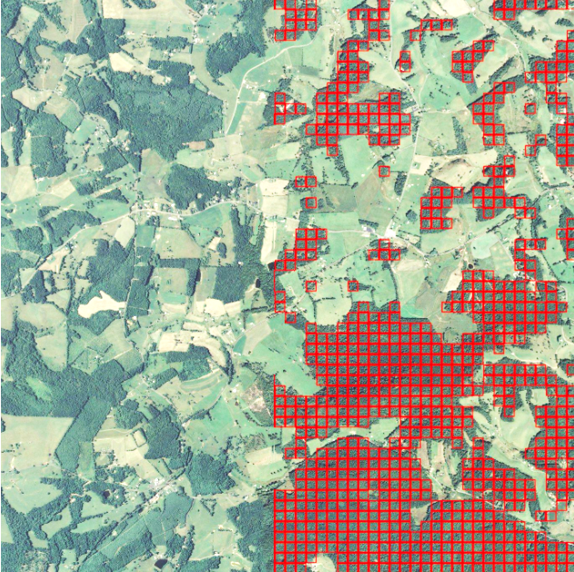
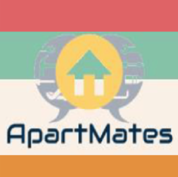
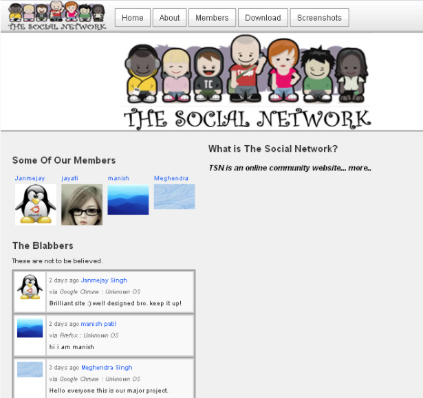
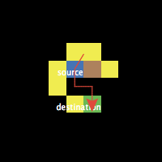

I am a second year student pursuing Master's in Computer Science at Virginia Tech. My research interests lie in Data Science, Software Engineering and Simulations. I am looking for full time job opportunities starting May 2018.
I have four years of professional work experience as a software developer and a strong background in computer science, software engineering and data science. I am experienced with machine learning and deep learning frameworks like: TensorFlow, Keras and Scikit-learn. I am also a Microsoft certified specialist, programming in HTML5 with JavaScript and CSS3. My current research focuses on improving reliability of large-scale interaction-based simulators using reinforcement learning.
I am proficient in full stack web and mobile development, designing web services, applied research, rapid prototyping and data analytics.
August 2016 - Present
Working in the Social Pathways project, on data-driven agent behavior modeling algorithms for large-scale epidemic simulators. These simulators enable federal agencies like NIH and DoD to make informed and scientifically-backed public health policies.
May 2012 - June 2016
Developed information systems to facilitate data collection and curation. Design and development of workflows and dashboards for simulation life cycle management. Performed data analysis and modeling tasks on collected and simulation generated data. Wrote design documents, technical reports and SDLC artifacts.
January 2012 - May 2012
Conducted initial research and proof of concept for projects along with software and architecture development. Lead a team of five, in a project involving design, development, testing and maintenance for an insurance services organization.
August 2016 - May 2018
GPA: 3.85/4.0
Coursework: Data Analytics, Theory of Algorithms, Software Engineering, Research Methods in CS, Models of HCI.
August 2007 - June 2011
Percentage: 74.03/100.0
Coursework: Operating Systems, Database Management Systems, Data Structures, Analysis and Design of Algorithms, Computer Networks, Web Technologies, Artificial Intelligence, Soft Computing, Information Security.
September 24, 2013
Graduate-level course focused on traditional and mobile malicious software, security threats it represents and state-of-the-art analysis and detection techniques. [view certificate].
September 23, 2013
Introductory course on engineering, design and marketing in the context of mobile web development. [view certificate].
August 13, 2013
Course focused on supervised and unsupervised machine learning algorithms like: regression, classification, support vector machines and clustering. [view certificate].
June 06, 2013
Course focused on building 'web-intelligence' applications using machine-learning and parallel map-reduce programming to analyze 'big data' such as arising from social media or genomics.
[view certificate].
February 19, 2013
Exam 70-480. [view certificate].
This project seeks to incorporate social behavior into mathematical models of infectious disease transmission dynamics, with a focus on influenza like illness. My contribution to this project is an approach to model and calibrate agent behavior in large multi-agent simulators using survey data. The objective is to make the behavior of the simulated agents close to that of real human populations.
Built grounded, fine-grained behavioral models which use "fragments" of behavior mined from past literature in the social sciences as well as studies conducted in the field. Fragments are the building blocks used to compose grounded fine-grained human behavior models. This culminated in a set of guidelines and a behavior composition approach. These were used to model a support services organization with an aim to study the factors that drive productivity and absenteeism in such businesses. The detailed guidelines, the behavior composition approach and the support services organization case study have been published in the Winter Simulation Conference, 2016. These efforts also lead to three other case studies which were published in prominent modeling and simulation conferences and workshops.
Norms are the policies, rules, explicitly stated or unwritten codes of conduct that has been prescribed to or agreed upon by a society or community to govern their behaviour. The process of norm formation, establishment, spread and function are an area of considerable interest to many disciplines from sociology, psychology, economics to computer science. This project aimed to extend the pioneering work of Robert Axelrod, on The Norms Game. I worked on various evolutionary algorithms which modeled the emergence of norms and there relationships to different organization structures. This resulted in three publications at software engineering and simulation science conferences.
 The objective here was to classify regions of forest within a geographic area using deep convolutional neural networks (CNNs). The project involved development of software infrastructure to train different CNN architectures on a dataset of "forest" and "non-forest" images. The trained networks were then used to automatically annotate forest and non-forest regions in a large aerial image of Floyd County, VA. Technologies used: Python, Pandas, Flask, TensorFlow, Keras. More details available in this paper. Source code for this project is available here.
 ApartMates is a web service that enables delegation and sharing of responsibilities and expenses among roommates in shared apartments. Users can create tasks with deadlines and priorities, shared amongst all roommates, and earn reputation points for finishing tasks on time. The system automatically generates grocery lists and grocery prices using the Walmart Open API. It also provides a RESTful interface to access user reputation points. Technologies used: JavaEE, PrimeFaces, JPA, MySQL, JAX-RS. More details available in the report. Source code for this project is available here.
This is a system consisting of Android wearable and smartphone applications which captures images using the smartphone camera when the heart rate (HR) of the user changes. The key idea is certain HR patterns are associated with a change in a person's disposition, and thus can be used as signals to capture important events a person experiences, while doing an activity (e.g., hiking) using photographs. The captured photographs along with associated HR values and timestamps can be analyzed post-hoc to discover, visualize and document changes in user's mood through a hike and the important events associated with these changes. Such information can be used to automatically capture and filter important memories for the user, without disrupting their hiking experience. Technologies used: Java, Python, Android SDK, Wear SDK, Plotly. Details about the system and the broader project are available in this paper. Source code is available here.
The objective here was to build a system that can find instances (frames) within videos in a large video library that match a natural language user query. The system builds on the Automated Image Captioning Using Deep Learning approach by Andrej Karpathy, Fei-Fei Li and extends it to videos. In essence, the system pre-processes all the videos in the library, by sampling frames (i.e. images) from each video, every few seconds and generates natural language captions for each frame using a Convolutional neural network and a Long short-term memory network. These captions are then indexed as documents along with the corresponding video url and timestamp. When a users submits a search query this index is used to retrieve the caption that best matches the search terms, along with the video and the precise timestamp, within the video associated with the caption. This project was built during the Build to Learn hackathon at Virginia Tech. Technologies used: Python, Flask, PyTorch, Lucene, CNN, LSTM, Bootstrap. Video demo and more details are available on Devpost. The source code can be found here.
 This is one of my undergraduate projects, a social networking web service. The system application is capable of securely loging users in and out. Users can create public profiles, upload profile picture and chat with other users. It also has the “remember me” feature which allows users to access their profiles without logging in. Technologies used: PHP, MySQL, HTML, CSS, JavaScript, Apache, Google Maps API. More details available in this report. Source code for this project is available here.
 This is a NetLogo toy model which simulates the A* path finding algorithm. Users can draw obstacles or completes mazes and the agent (turtle) will find the shortest possible path (if one exists) to a destination point (patch). The path finding is visualized in the model, so users can observe, understand and learn how the algorithm works. More details, including how to use the model are available on the official NetLogo user community page.
Please feel free to contact me any time via any of the following means, for job opportunities you may have, questions regarding my research or any of my projects!
3200 Richmond Lane, Apt. F
Blacksburg, VA
24060 US
(+1) 540 449 8769